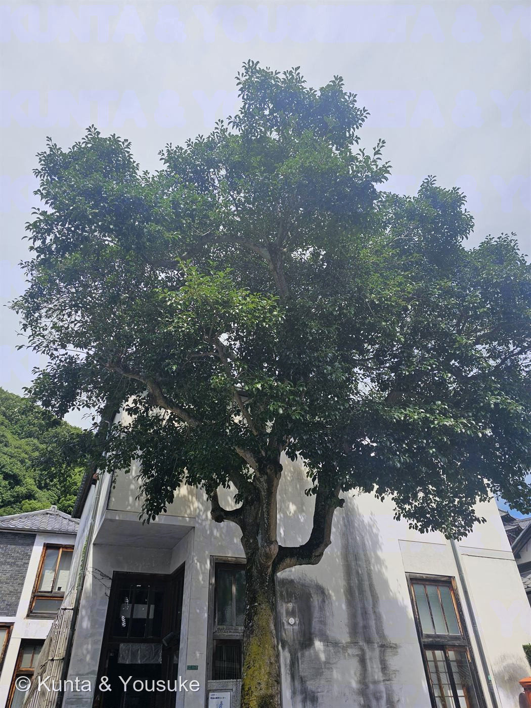

なぞの大木
同定中 — 常緑広葉樹
町並み保存地区・建物の前・長く剪定されてきた古木（樹高 8〜10m ほど）
科も未確定
宿題葉を1枚、近くで見て名前をつける013なぞの野草に続く、二人の2つめの謎
手がかり（写真から確実に読めたこと）
- 常緑の広葉樹の大木。8〜10mほど。太い枝には剪定痕のこぶが並ぶ——何十年も人が形を整えてきた木。
- 葉：倒卵形（先が丸い）／全縁（ギザギザなし）／厚く革質でつやがある。
- 葉のつき方：枝先にロゼット状（輪生状）に集まり、その間の枝は裸。これがいちばん特徴的。
- 樹皮：なめらかな灰色。地衣類つき。深い縦の裂け目はない。
- ⚠弱点：花も実も見えない（7月中旬）。葉の接写がないので、葉柄の色・葉先の形・葉裏が確認できない。ここが決められない理由。
候補（仮説）
- 本命① モッコク（Ternstroemia gymnanthera／サカキ科）——枝先のロゼットがそっくり。「庭木の王様」と呼ばれ、古い町家や格式ある建物の象徴木の定番。引っかかる点：ふつうはもっと直立・円錐形に育つ。この木は横に広がっている。
- 本命② モチノキ（Ilex integra／モチノキ科）——全縁の倒卵形の葉、なめらかな灰色の樹皮、「庭木の三大名木」のひとつ。剪定に耐えて古木になる。引っかかる点：葉はもう少し枝に沿って散らばる傾向。
- 対抗 タブノキ（Machilus thunbergii／クスノキ科）——枝先に葉が集まる。大木になる。社寺や町並みの巨木として多い。引っかかる点：葉がもっと大きいはず（8〜15cm）。
- 対抗 ヤマモモ（Morella rubra／ヤマモモ科）——枝先に集まる全縁の葉、なめらかな樹皮、大木になる。引っかかる点：7月なら赤い実がついていそう（雄株なら実はつかない）。
※ヤマモモはこの図鑑の「探してみたい」リストにいる子。もしこれがヤマモモなら、思わぬ回収になる。 - 否定：クスノキ。クスノキの葉は三行脈（3本の主脈）がめだち、樹皮は縦に細かく裂ける。この木はどちらも合わない。
確定のしかた（宿題）
- 📷 次にあの建物の前を通るとき、葉を1枚、接写してくる。見たいのは3つ——
① 葉柄（葉の柄）の色：モッコクは赤みを帯びることが多い。ここが最大の分かれ道。
② 葉の先：丸いか／少しへこむか／短くとがるか。
③ 葉のうら：色と葉脈の出かた。タブノキは葉裏が白っぽい。 - 🍂 秋〜冬に赤い実がつけば モチノキ（雌株）の可能性が大きく上がる。モッコクは秋に実が裂けて赤い種がのぞく。
- 🍒 6〜7月に赤い実が落ちていれば ヤマモモ。
- 🏷 保存地区なら、保存樹木の指定や樹名板が別の面にあるかもしれない。建物の人に聞くのがいちばん早い。